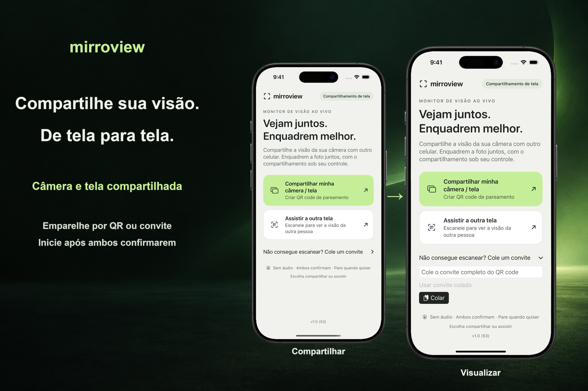

Emparelhe pessoalmente
Uma pessoa compartilha um convite. A outra escaneia o QR code ou cola o convite, e ambas confirmam a sessão.
Uma visão compartilhada, por escolha
Compartilhe a tela do seu iPhone ou iPad com alguém por perto. Ambos os dispositivos precisam do iOS ou iPadOS 17 ou mais recente. As duas pessoas confirmam a sessão, e quem envia aprova a captura de tela pela interface do sistema.

Uma pessoa compartilha um convite. A outra escaneia o QR code ou cola o convite, e ambas confirmam a sessão.
A tela inicial inicia o compartilhamento da tela inteira. Após a autorização no iOS ou iPadOS, quem envia pode abrir outro app, incluindo a Câmera, para mostrar sua tela.
Encerre a sessão em qualquer dispositivo. Na primeira conexão, use a mesma rede Wi-Fi local acessível. A disponibilidade da conexão por proximidade depende dos dispositivos, do suporte do sistema e das condições sem fio.
O compartilhamento de tela pode exibir notificações e outras informações privadas. O app não transmite áudio. Quem visualiza ainda pode fazer capturas de tela, gravar a tela ou fotografar o que vê. Alguns conteúdos protegidos podem aparecer em branco.